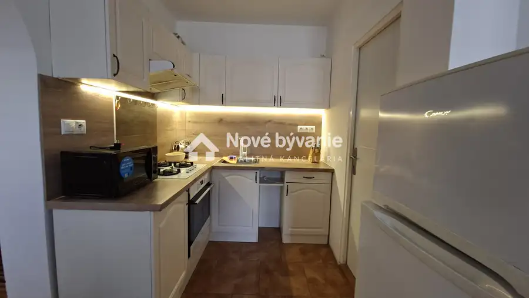
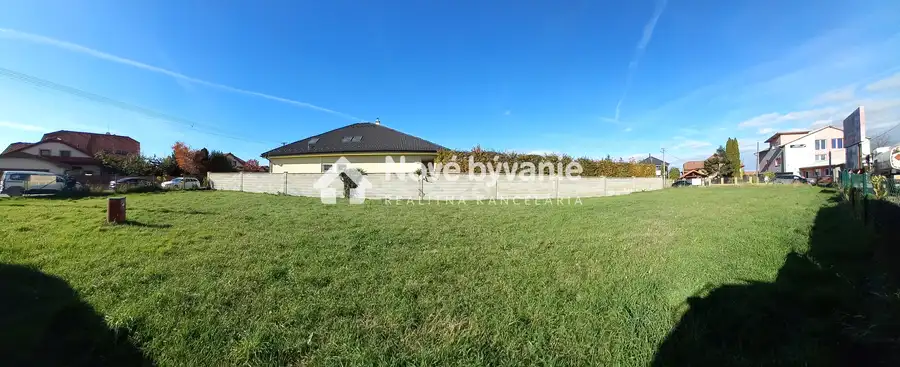
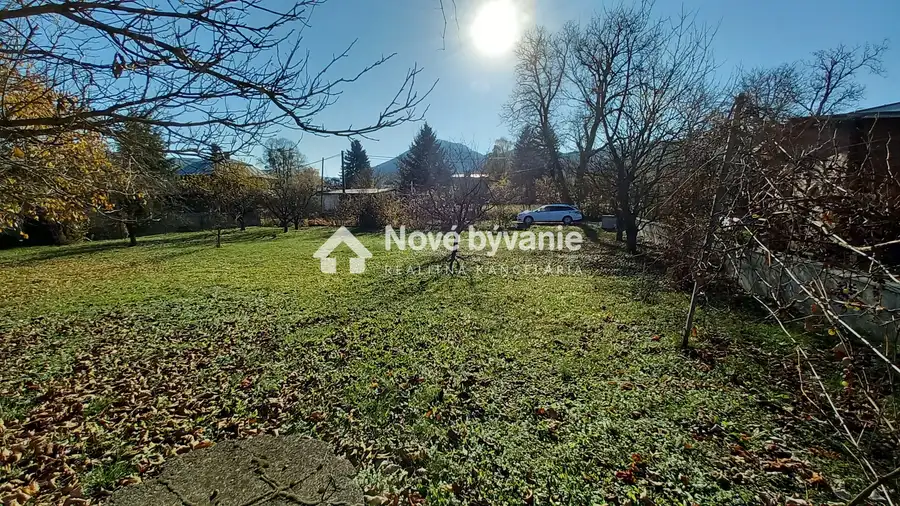
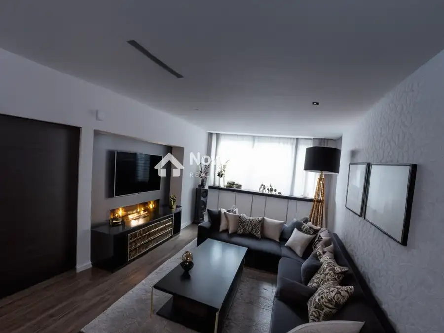
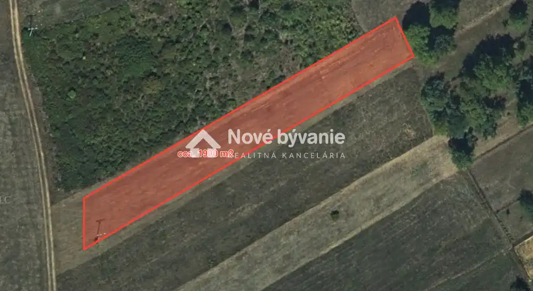
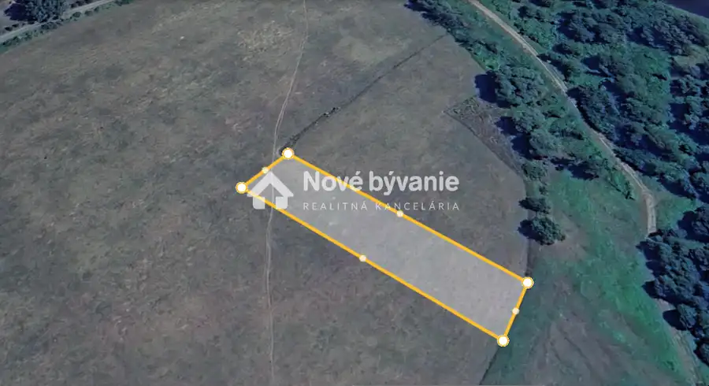

Aktuálna ponuka
6 nehnuteľností, predovšetkým pozemky, byty. Každá má vlastnú stránku s fotkami, popisom a mapou.
Prezrieť ponuku
 Tu bude Vaša fotkapošlite ju e-mailom, obratom ju vymeníme
Tu bude Vaša fotkapošlite ju e-mailom, obratom ju vymenímeMarek Jurčišin · Realitný maklér · Nové bývanie
Volám sa Marek Jurčišin, som realitný maklér kancelárie Nové bývanie. Predaj, prenájom a odhad ceny nehnuteľností, lokality Košice, Chlmec a Humenné.
Viac o mneVolám sa Marek Jurčišin. Som realitný maklér kancelárie Nové bývanie a pôsobím predovšetkým v lokalitách Košice, Chlmec, Humenné a Lackovce (Košický kraj).

6 nehnuteľností, predovšetkým pozemky, byty. Každá má vlastnú stránku s fotkami, popisom a mapou.
Prezrieť ponuku
Košice, Chlmec, Humenné, Lackovce a okolie. Ponuku si môžete prezrieť podľa lokality.
Nehnuteľnosti v lokalite
Odhad trhovej ceny, príprava prezentácie, obhliadky, zmluvy a odovzdanie nehnuteľnosti.
Dohodnúť stretnutie
Pozemok Cena na vyžádáníUnikátny pozemok s nekonečným horizontom-Humenné, Brestovská Humenné 1900 m²
Pozemok Cena na vyžádáníStavebný pozemok Lackovce 2507m2, rovinatý a slnečný LackovceTomuto výberu zatiaľ nezodpovedá žiadna ponuka. Napíšte mi, čo hľadáte.
Každý špendlík je jedna nehnuteľnosť z mojej ponuky. Kliknite a pozrite sa.
© prispievatelia OpenStreetMap
Na čo sa pýtate najčastejšie, skôr než sa stretneme.
Odhad trhovej ceny vychádza z aktuálnych ponúk a predajov v lokalite, nie z cenníkových tabuliek. Podmienky Vám poviem pri prvom telefonáte.
Najprv obhliadka a odhad ceny, potom príprava prezentácie (fotografie, popis, inzercia), obhliadky so záujemcami, rezervačná zmluva, kúpna zmluva, návrh na vklad do katastra a odovzdanie nehnuteľnosti. O každom kroku viete vopred.
Najrýchlejšie cez WhatsApp alebo telefón. Termín stretnutia alebo obhliadky dohodneme podľa Vás.